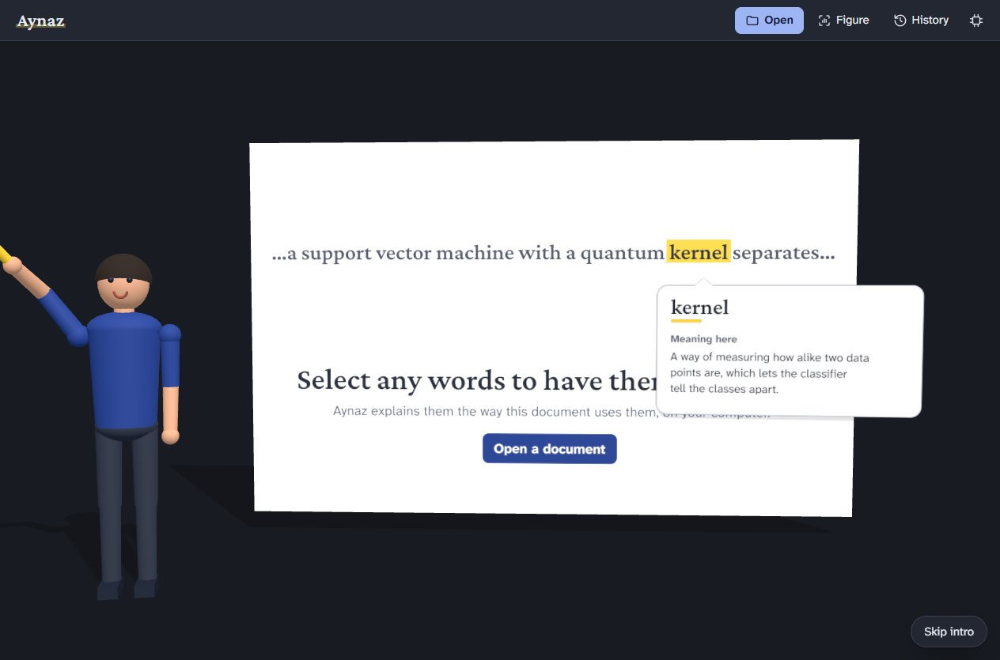
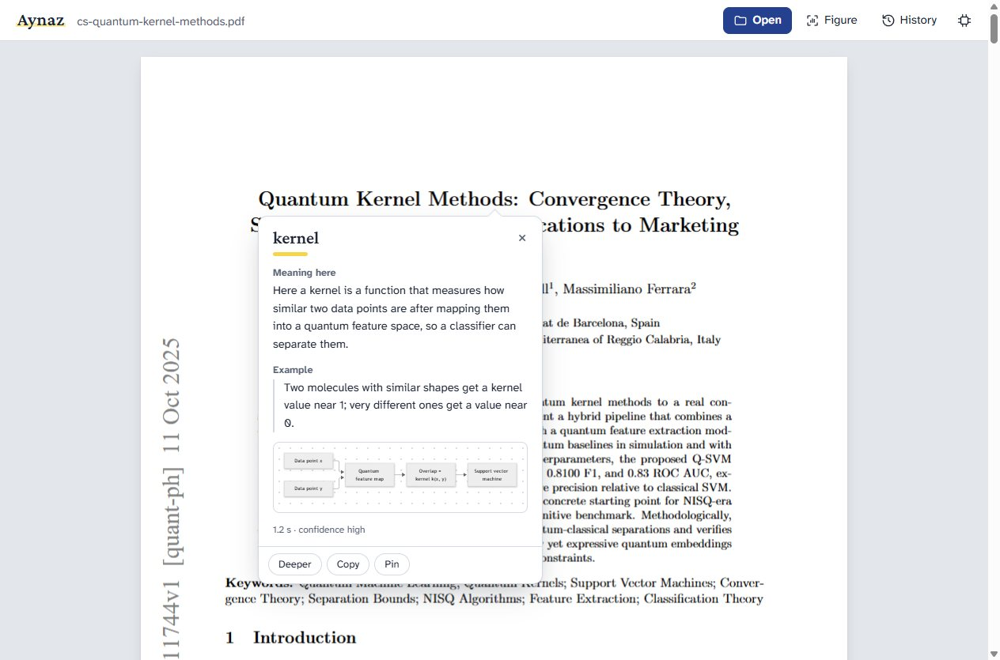
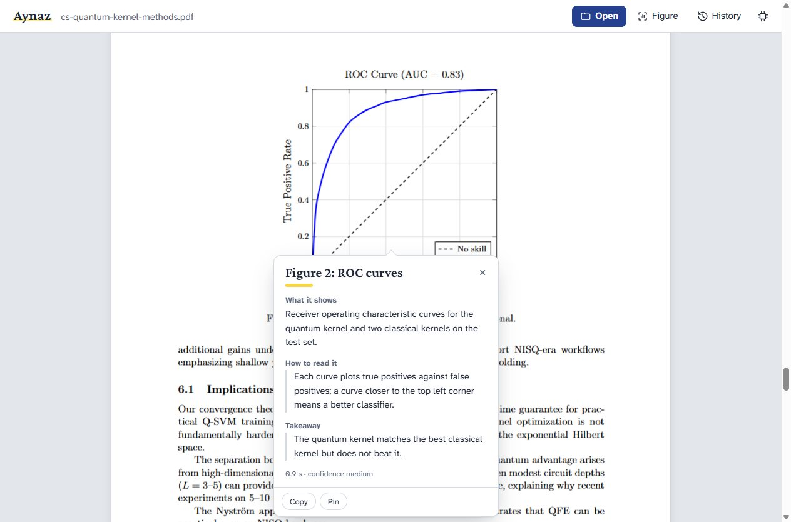
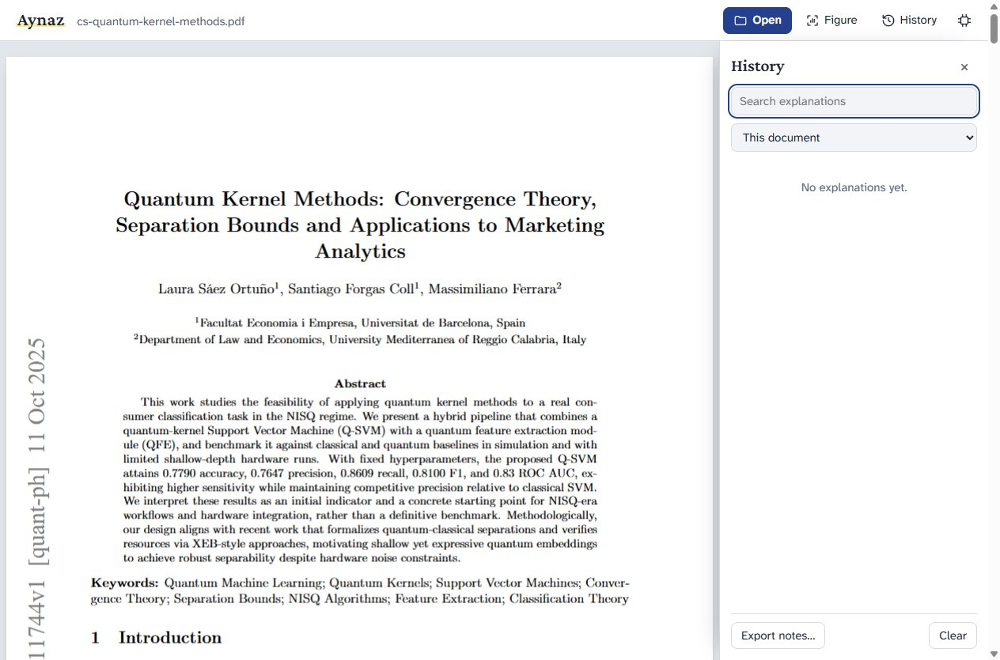

Free AI document reader for Windows, macOS and Linux
Aynaz
Select any words in a research paper or document and Aynaz explains them the way that document uses them, with an example and a diagram; draw a box around a figure and it explains that too. The AI runs on your own computer, so your documents never leave it.
Windows, macOS (Apple Silicon) and Linux. All downloads and how to install
Version 0.5.4, built by Dr. Azharul Islam

What it does
A reader for PDF, Word, PowerPoint, Excel, EPUB, ODT, RTF, text and Markdown files, with an explainer built in.

Explains words the way this document means them
The same word means different things in different fields. Aynaz reads the sentences around your selection and related passages from the same document, so kernel in a machine-learning paper is explained as a similarity function, not as the core of an operating system. Each answer has the meaning, a real-world example and a small diagram. Deeper asks the model to reason before it answers.

Explains figures, charts and tables
Press Figure and drag a box around a chart, diagram or table. Aynaz says what it shows, how to read it and the takeaway, using the figure's caption and the sentences that mention it. It also works on scanned pages that have no selectable text.

Keeps a history, and works in other apps
Every explanation is kept in a searchable history that you can export as notes. Select text in your browser or any other app and press Ctrl+Shift+E to have it explained there too.
Private
Documents are read and explained on your computer. No account, no upload.
Offline
After a one-time model download, Aynaz works without internet.
Fast on a graphics card
About a second per explanation with a graphics card, about nine seconds on the processor alone.
Free
Free to use for personal, academic and commercial work. Built on open models and tools.
Download and install
Why does my computer warn me? Aynaz is free and made by one developer, so its installers are not signed with a paid certificate. The warning is about the unknown publisher, not about anything in the app. You confirm once; after that Aynaz opens normally.
Windows 10 and 11
Download for Windows about 180 MB- Run the
Aynaz-Setupfile you downloaded. - Windows shows a blue Windows protected your PC screen. Click More info, then Run anyway.
- Follow the installer, then open Aynaz from the Start menu.
Microsoft Defender SmartScreen prevented an unrecognized app from starting.
More info
Run anywayDon't run
macOS Beta
Download for Mac about 200 MB- For Apple Silicon Macs (M1 and later).
- Open the
.dmgand drag Aynaz into Applications. The window shows the steps below too. - Open Aynaz. macOS says it could not verify Aynaz: click Done.
- Open System Settings → Privacy & Security, scroll down and click Open Anyway, then Open Anyway again and enter your Mac password. You do this only once.
- To explain text in other apps, allow Aynaz under System Settings → Privacy & Security → Accessibility.
Apple could not verify “Aynaz” is free of malware that may harm your Mac or compromise your privacy.
DoneMove to TrashPrefer the Terminal?
After dragging Aynaz into Applications, this one line does the same as the steps above:
xattr -dr com.apple.quarantine /Applications/Aynaz.app
Linux Beta
Download for Linux about 225 MB- For 64-bit Intel and AMD computers.
- On Ubuntu 22.04 and later, install FUSE once:
sudo apt install libfuse2(on Ubuntu 24.04:libfuse2t64). - Make the file runnable: right-click it, choose Properties and turn on Allow executing file as program. Or run
chmod +x Aynaz-*.AppImage - Double-click it to start Aynaz.
On first start
- An intro of about 25 seconds shows how Aynaz works each time it starts; then its reader keeps you company beside the welcome screen until you open a document. Click or press Esc to skip the intro.
- Aynaz offers to download its AI model (2.5 GB) once. It takes a few minutes, resumes if interrupted, and is checked before use.
- The first time you explain a figure, it offers the figure model (about 3 GB) the same way.
What you need
- 8 GB of memory (RAM).
- About 3 GB of disk space, plus 3 GB for figures.
- A graphics card is optional: NVIDIA, AMD and Intel are used when present.
Mac and Linux versions are marked beta because they have not yet been tested on many machines. If something does not work, please write to the email below.
Updates
When a new version is out, Aynaz shows a bar with a Download button. Install the new version over the old one: your history, settings and downloaded models are kept. Help → Check for Updates Now checks at any time.
Privacy
Your documents and selections stay on your computer. Aynaz uses the internet only to download its models once, and to check this website once a day for a newer version. That check reads one small file and sends nothing about you; turn it off under Help → Check for Updates Automatically.
Developer
Built by Dr. Azharul Islam
Explanations are generated by an AI model and can be wrong. Check anything important against the document itself. Aynaz uses the Qwen3 models (Apache 2.0) and llama.cpp (MIT); their licences are included with the app.